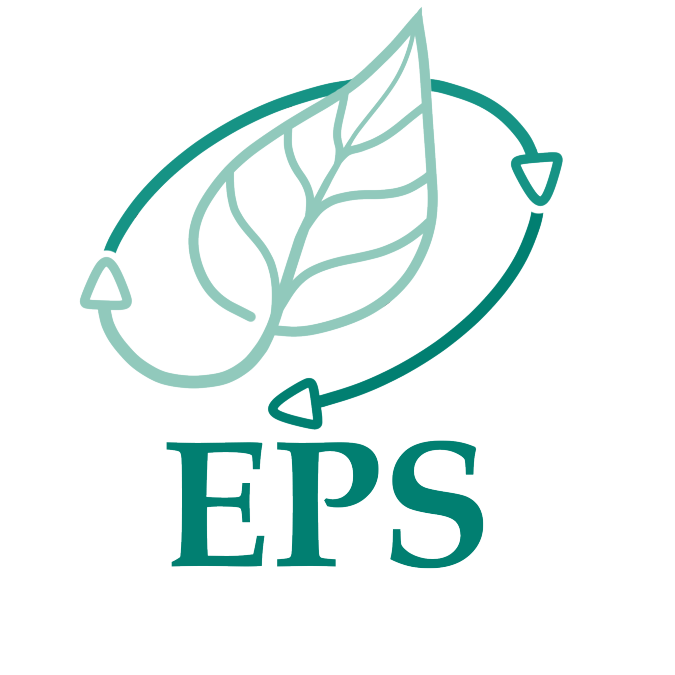
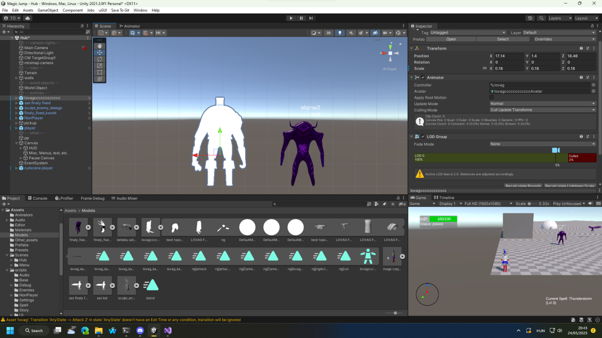
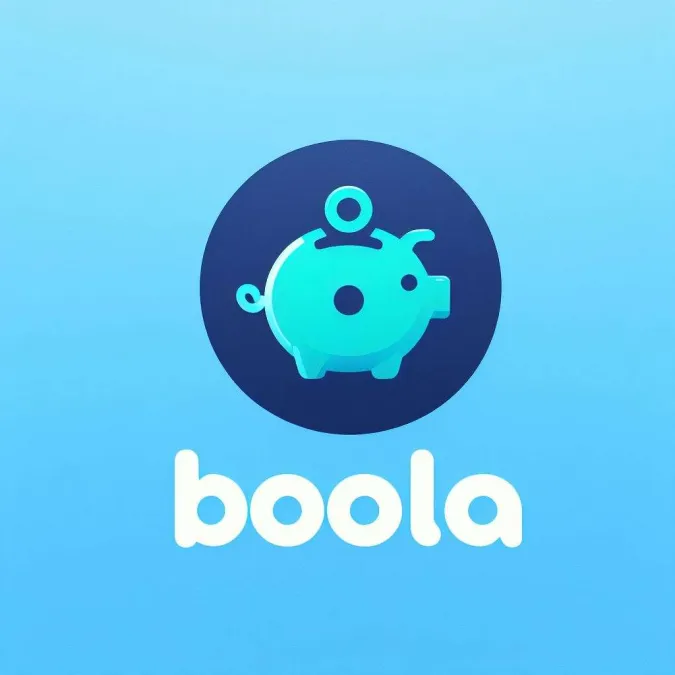

Hello, Ótott-Kovács Tamás vagyok!
Személyes adatok:
- Név: Ótott-Kovács Tamás
- Lakhely: Szeged, Magyarország
- Hobbik: Programozás, játék, Android modding és minden más, ami Tech
Programozási tudás
-
C#
- Objektumorientált programozás, programtervezési minták
- modern C# ismerete
- .NET
- ASP.NET
- Entity Framework
- WPF
- MAUI
- discord.Net
- Visual Studio, ReSharper használata
-
Unity
- Alapok
- Input System
- Objektumorientált szkriptelés
- Nagy teljesítményű kód
- Tesztelés
- Editor scripting
-
Java/Kotlin
- Objektumorientált programozás
- Ktor (Kotlin web szerver)
- JDBC
- Jib (Docker konténerizálás)
- Gradle
- Modern Kotlin funkciók
- IntelliJ használata
Tapasztalat:
-
EPS projekt
-
Feladat:
- Webszerver készítése
- REST API készítés
- Kapcsolat az adatbázissal
-
Felhasznált technológiák:
- Kotlin
- Ktor
- JDBC
- Jib
- Docker
- IntelliJ IDEA

-
ZOP Games - Spellsower projekt
-
Feladat:
- Játéklogika kifejlesztése
- Játék anyagainak importálása és integrálása a játékba
- Teljesíménycél elérése
- Discord bot készítése a Discord szerverhez
-
Felhasznált technológiák:
- Unity
- ReSharper
- Discord.Net

-
Vizsgaremek - Boola
-
Feladat:
- Frontend elkészítése
- Backend elkészítése
- Adatbázis-tervezés és karbantartás
-
Felhasznált technológiák:
- WPF
- MAUI
- ASP.NET
- Entity Framework

Kapcsolat: